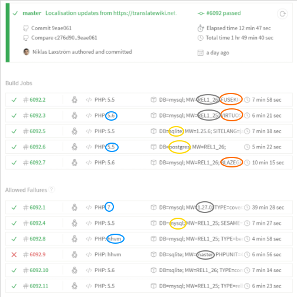

Presentation by Karsten Hoffmeyer and @JeroenDeDauw
SMWCon Fall 2016, Frankfurt
~1100 mails on semediawiki-user
~100 mails on semediawiki-devel
~5500 edits and ~1300 new pages on semantic-mediawiki.org
~670 watchers of installation video on Vimeo
(finishes, past 12 months)
up from ~580 last year
~1600 installs from Packagist per month
~28 developers last year, ~100 total
~1500 code changes
Continuous testing of many environments

MAJOR.MINOR.PATCH
2.4.0
BREAKS.FEATURES.FIXES
Want only bugfixes? ➜ 2.4.x
New features but no b/c breaks? ➜ 2.x
SMW was made more responsive to multiple language environments including:
Simplified navigation and extended "Special:Ask" to provide quick links for immediate result download
Support for uniqueness and pattern based (regular expressions) property value constraints
Support for DISPLAYTITLE via a queryable special property
Improved handling of outdated entities
("rebuildData.php" --shallow-update option)
Enhanced date, time and number display formatting
Improved selection of pages
Improved handling of outdated entities (plays with "rebuildData.php" --shallow-update parameter)
More parameters to the "rebuildData.php" script:
Added full support for PHP 7.0
| SMW 1.9 | 1.19 | 1.20 | 1.21 | 1.22 | ||||||
|---|---|---|---|---|---|---|---|---|---|---|
| SMW 2.0 | 1.19 | 1.20 | 1.21 | 1.22 | 1.23 | |||||
| SMW 2.3 | 1.19 | 1.20 | 1.21 | 1.22 | 1.23 | 1.24 | 1.25 | |||
| SMW 2.4 | 1.19 | 1.20 | 1.21 | 1.22 | 1.23 | 1.24 | 1.25 | 1.26 | 1.27 | |
| SMW 2.5 | 1.23 | 1.24 | 1.25 | 1.26 | 1.27 | ... | ||||
| SMW 3.0 | 1.27 | ... |
Create feature requests
File bugs you encounter
Become part of the testers group
Add or enhance documentation
Add or enhance translations
Answer questions and participate in discussions
Code review
Contribute code (correctly)
bit.ly/2016-smw